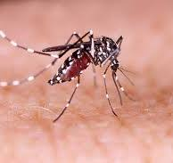

Epidemia de Dengue Assola o Brasil: Um Alerta à Saúde Pública
Ricardo Brandão 14-02-2024 - O Brasil enfrenta uma grave epidemia de dengue, com um aumento significativo no número de casos e mortes nos últimos meses. O Ministério da Saúde já registrou mais de 1,5 milhão de casos em 2024, um aumento de 80% em comparação com o mesmo período do ano anterior. O número de mortes também subiu consideravelmente, com mais de 500 óbitos confirmados.
Regiões Mais Afetadas:
Os estados mais afetados pela epidemia são:
- São Paulo: concentra mais de 30% dos casos do país.
- Minas Gerais: registra um aumento de 100% nos casos em comparação com 2023.
- Rio de Janeiro: enfrenta um cenário crítico, com hospitais lotados e falta de leitos.
- Bahia: também apresenta um alto número de casos e mortes.
Fatores que Contribuem para a Epidemia:
- Falta de saneamento básico: milhões de brasileiros não têm acesso à água potável e esgoto tratado, o que facilita a proliferação do mosquito Aedes aegypti, transmissor da dengue.
- Condições climáticas: as chuvas frequentes e o calor criam um ambiente propício para a reprodução do mosquito.
- Falta de conscientização da população: muitas pessoas ainda não tomam as medidas necessárias para prevenir a dengue, como eliminar criadouros do mosquito.
- Campanhas de conscientização: o governo e as autoridades de saúde devem intensificar as campanhas de informação sobre a dengue, orientando a população sobre como prevenir a doença.
- Melhoria do saneamento básico: o investimento em infraestrutura de saneamento é fundamental para eliminar os criadouros do mosquito Aedes aegypti.
- Combate ao mosquito: ações de controle do mosquito, como fumacê e aplicação de larvicidas, devem ser intensificadas.
- Mobilização da sociedade: é fundamental que toda a sociedade se mobilize para combater a dengue, adotando medidas de prevenção em suas casas e comunidades.
- Tampar caixas d'água e tonéis.
- Manter calhas e ralos limpos.
- Eliminar água parada em vasos de plantas.
- Cobrir piscinas e tampar pneus.
- Usar repelente quando estiver em áreas com risco de dengue.
- Usar roupas compridas e mangas compridas ao amanhecer e anoitecer, quando o mosquito é mais ativo.
- Procurar atendimento médico caso apresente sintomas de dengue, como febre alta, dor de cabeça, dores musculares e articulares, e manchas vermelhas na pele.
Medidas para Combater a Epidemia:
A epidemia de dengue no Brasil é um problema sério de saúde pública que exige medidas urgentes e eficazes por parte do governo, das autoridades de saúde e da população. A prevenção é a melhor forma de combater a doença.
Recomendações para a População:
Eliminar criadouros do mosquito Aedes aegypti: